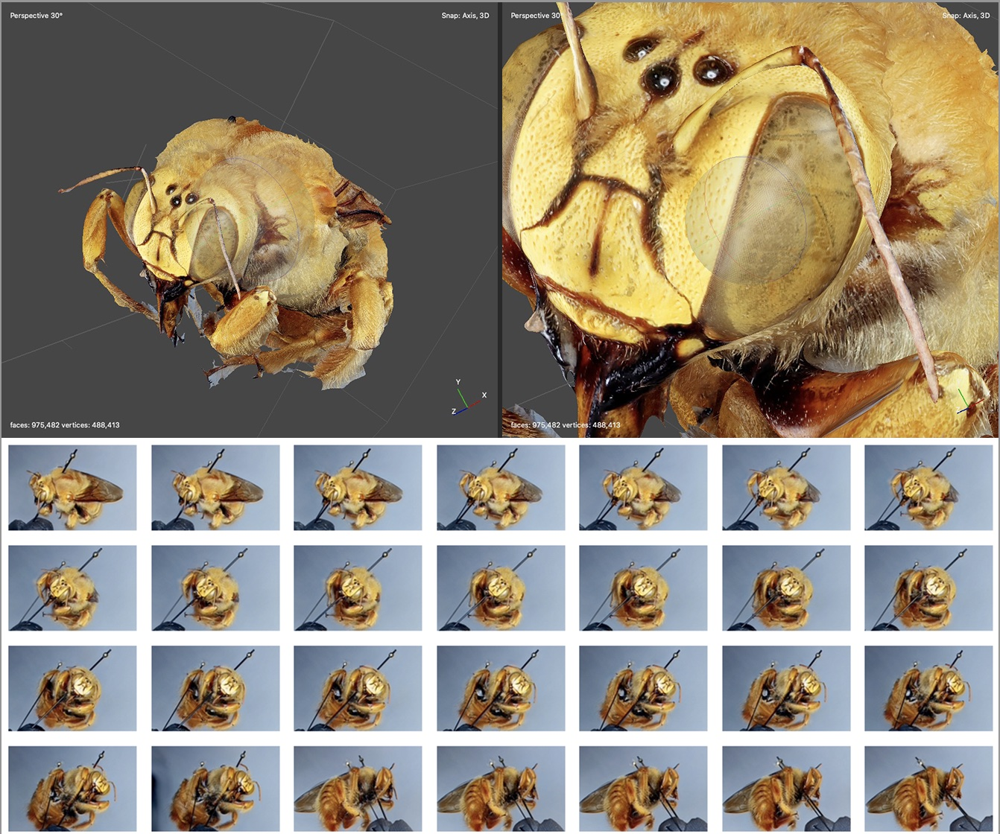
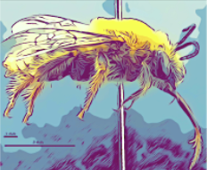

Extending Anthophila research through image and trait digitization (Big-Bee)
While bees are critical to sustaining a large proportion of global food production, as well as pollinating both wild and cultivated plants, they are decreasing in both numbers and diversity. Our understanding of the factors driving these declines is limited, in part, because we lack sufficient data on the distribution of bee species to predict changes in their geographic range under climate change scenarios. Additionally lacking is adequate data on the behavioral and anatomical traits that may make bees either vulnerable or resilient to human-induced environmental changes, such as habitat loss and climate change. Fortunately, a wealth of associated attributes can be extracted from the specimens deposited in natural history collections for over 100 years.

Extending Anthophila Research Through Image and Trait Digitization (Big-Bee) is a newly funded US National Science Foundation Advancing Digitization of Biodiversity Collections project. Over the course of three years, we will create over one million high-resolution 2D and 3D images of bee specimens (Fig. 1), representing over 5,000 worldwide bee species, including most of the major pollinating species. We will also develop tools to measure bee traits from images and generate comprehensive bee trait and image datasets to measure changes through time. The Big-Bee network of participating institutions includes thirteen US institutions and partnerships with US government agencies. We will develop novel mechanisms for sharing image datasets and datasets of bee traits that will be available through an open, Symbiota-Light data portal called the Bee Library. In addition, Biotic interaction and species association data will be shared via Global Biotic Interactions. The Big-Bee project will engage the public in research through community science via crowdsourcing trait measurements and data transcription from images using Notes from Nature. Training and professional development for natural history collection staff, researchers, and university students in data science will be provided through the creation and implementation of workshops focusing on bee traits and species identification. We are also planning a short, artistic college radio segment called "the Buzz" to get people excited about bees, biodiversity, and the wonders of our natural world.
Participating People and Institutions
UC Santa Barbara, Cheadle Center for Biodiversity and Ecological Restoration
Katja C. Seltmann
Arizona State University, Biodiversity Knowledge Integration Center
Nico Franz, Ed Gilbert & Sangmi Lee
Bug News
Erika Tucker
California Academy of Sciences
Christopher Grinter
Florida Department of Agriculture and Consumer Services
Elijah J. Talamas
Global Biotic Interactions
Jorrit Poelen
University of Nevada, Reno
Julie Allen
Natural History Museum of Los Angeles County
Brian V. Brown
Harvard University, Museum of Comparative Zoology
Naomi E. Pierce, Crystal Maier & Paul Morris
Macroscopic Solutions
Mark Smith
San Diego Natural History Museum
Pamela Horsley
US Geological Survey
Sam Droege
University of California, Berkeley
Peter Oboyski & Neil D. Tsutsui
University of Colorado, Boulder, Museum of Natural History
Adrian Carper & Virginia L. Scott
University of Kansas, Biodiversity Institute & Natural History Museum
Michael S. Engel & Victor H. Gonzalez
University of Michigan
Research
Big-Bee will advance research on bee ecology and taxonomy through the creation and standardization of open datasets for taxonomic and computational analysis. It will overcome challenges in bee identification and discovery by linking ecological and anatomical traits. Today, the vast majority of digital insect records include only taxon names, dates, and locations. This paucity of data greatly limits opportunities for research.
 To achieve fundamental changes in how insect specimens are digitized, the project will supply innovative methods for deep digitization of target taxa, including high-resolution imaging methods. These image data will enable the scoring of life-history traits and will facilitate identification from digitized specimens. Big-Bee will further revolutionize processes of insect specimen digitization by enabling global bee data to be integrated and linked. The project will produce important partnerships between researchers, industry, and government agencies.
To achieve fundamental changes in how insect specimens are digitized, the project will supply innovative methods for deep digitization of target taxa, including high-resolution imaging methods. These image data will enable the scoring of life-history traits and will facilitate identification from digitized specimens. Big-Bee will further revolutionize processes of insect specimen digitization by enabling global bee data to be integrated and linked. The project will produce important partnerships between researchers, industry, and government agencies.
Outreach and Broader Impacts
Big-Bee will collaborate on the creation of the US National Native Bee Monitoring Plan as part of the Bee Monitoring Research Coordination Network currently funded through the USDA. It will create an infrastructure to support hundreds of bee researchers in specimen digitization. The project published datasets contribute to the Open Traits Network, Global Biotic Interactions, and other downstream applications. It will develop computer science and collections-based undergraduate curricula, increasing capacity in entomology for bee identification and research. Participating institutions will develop undergraduate course materials that involve examination of bee specimens and the use of data derived from specimens, and will contribute lesson plans to BLUE (Biodiversity Literacy for Undergraduate Education). Extensive workforce training in biodiversity informatics, museum preparation, bee identification, and the creation of citizen science monitoring programs will be offered to collections within and outside the Big-Bee network. Big-Bee museums will contribute to a new syndicated college radio science program, "The Buzz" that will be produced by undergraduate students in science communication.

Products
The full proposal can be found at: Seltmann, K. C. (2021). Extending Anthophila research through image and trait digitization (Big-Bee) proposal. UC Santa Barbara: Cheadle Center for Biodiversity and Ecological Restoration. Retrieved from https://escholarship.org/uc/item/2vm761mv
Seltmann KC, Allen J, Brown BV, Carper A, Engel MS, Franz N, Gilbert E, Grinter C, Gonzalez VH, Horsley P, Lee S, Maier C, Miko I, Morris P, Oboyski P, Pierce NE, Poelen J, Scott VL, Smith M, Talamas EJ, Tsutsui ND, Tucker E (2021) Announcing Big-Bee: An initiative to promote understanding of bees through image and trait digitization. Biodiversity Information Science and Standards 5: e74037. https://doi.org/10.3897/biss.5.74037
Cheadle Center for Biodiversity and Ecological Restoration, University of California Santa Barbara. (2021). UC Santa Barbara Invertebrate Zoology Collection (UCSB-IZC) Data Archive and Biodiversity Dataset Graph (0.1) [Data set]. Zenodo. https://doi.org/10.5281/zenodo.5557670 https://archive.org/details/preston-ucsb-izc (hash://sha256/d5eb492d3e0304afadcc85f968de1e23042479ad670a5819cee00f2c2c277f36)
Links for More Information
Bee in Touch! Questions and comments can be posted on our Big-Bee GitHub project discussion.
Acknowledgements
This project is supported by the National Science Foundation. Award numbers: 2102006, 2101929, 2101908, 2101876, 2101875, 2101851, 2101345, 2101913, 2101891 and 2101850.